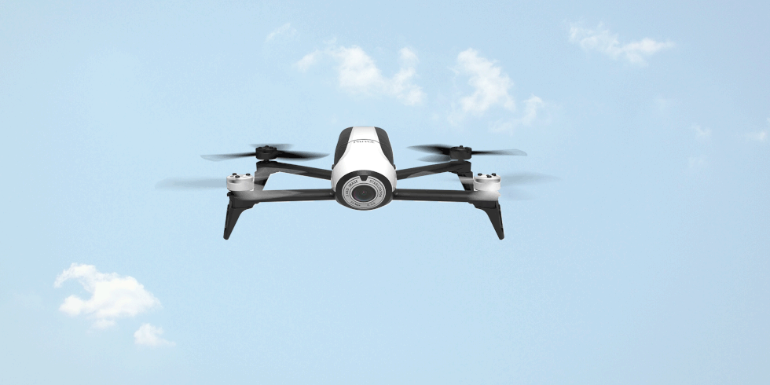
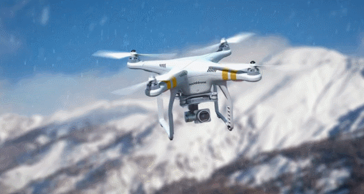
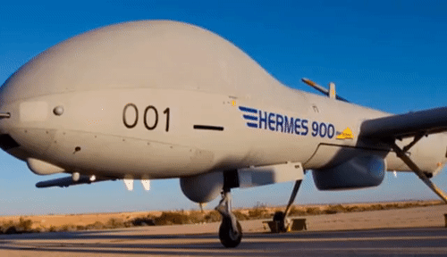
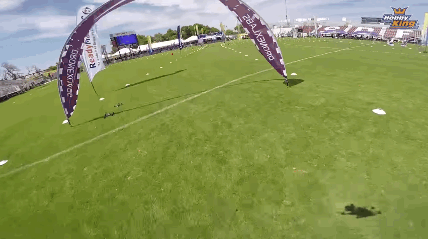
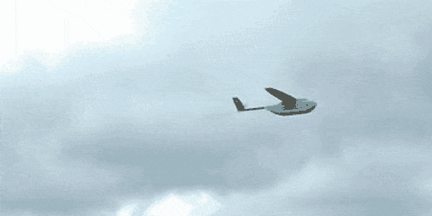
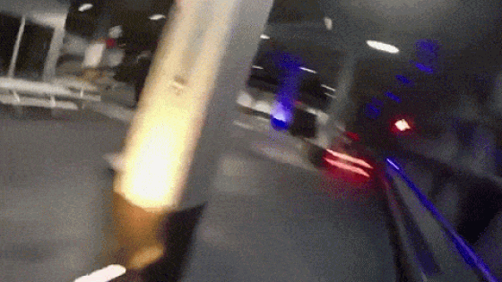
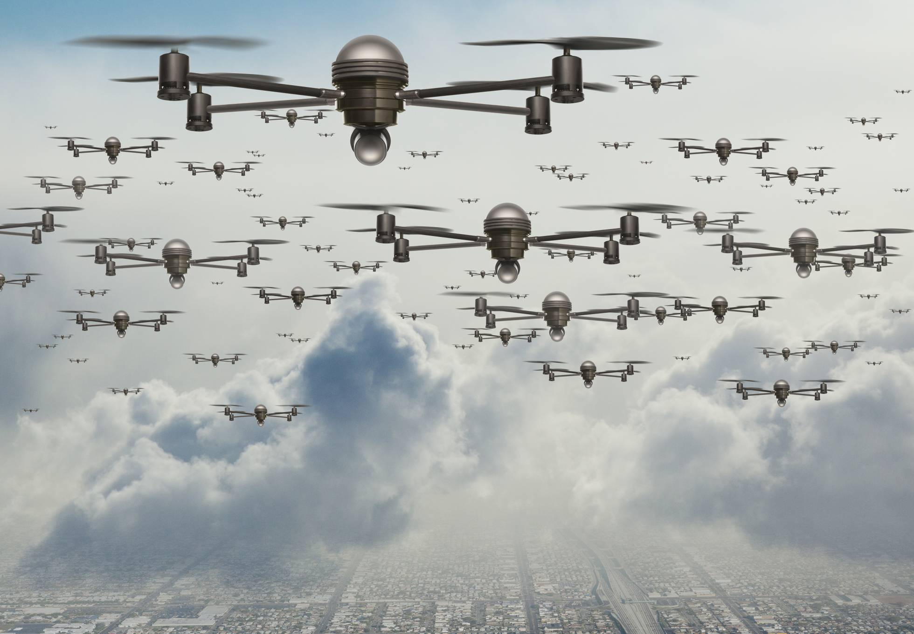
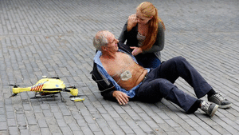

Ventajas y deventajas de los drones
Los drones están de moda, pero ¿es sólo una moda pasajera o tienen un fin real?, para encontrar la respuesta correcta debemos analizar cuáles son las fortalezas y debilidades que nos ofrecen los quadcopters, los aviones no tripulados o como habitualmente llamamos drones.
Estamos ante dispositivos o aparatos que son controlados a distancia y que pueden realizar vuelos de forma autónoma, y eso puede tener muchas ventajas pero a la vez, también hay desventajas, como te las explicamos en este sitio web.
Puesto que son muchas las aplicaciones de un drone, también son muchas las perspectivas que podemos manejar para observar las ventajas y desventajas de esto vehículos aéreos no tripulados. A continuación te ofrezco algunas de las opciones que he recopilado y te muestro a continuación, algunas son de lo más singular y peculiar, pero todas tienen como fin la aplicación y el uso de un drone.
Ventajas de los drones
Las ventajas que tiene tener un dron en casa son demasiadas, y los usos también son muy variados, por eso, tengo la lista de: ¿Porqué deberías de tener un dron?
- Los drones tienen presupuestos inferiores:  Los costes que necesitamos soportar para poder usar las aplicaciones de los drones, son muy inferiores a las que estábamos usando hasta ahora, con otras soluciones. El precio por hora de vuelo es muy inferior en aviones no tripulados a los que tienen que llevar un piloto. Por otra parte, podemos introducir rangos de precios que hasta ahora eran inaccesibles para poder ser viables y por tanto poder ser considerados.
- Los drones reducen los tiempos Ya hace mucho, que el tiempo es algo que se considera económicamente como un bien muy preciado. Los drones reducen los tiempos Los aviones no tripulados favorecen la reducción de tiempos o plazos en la ejecución de una tarea si lo comparamos con cualquier otra solución. Por ejemplo, a la hora de realizar las tareas previas al vuelo en un aparato no tripulado en comparación con uno tripulado, estas se realizan en un tiempo mucho más pequeño.
- Existen combinaciones de trabajo que permiten realizar aterrizajes y despegues en casi cualquier sitio (siempre que la normativa lo permita). Por contra en otras opciones estas posibilidades son más complejas, sin ir más lejos si hablamos de una avioneta, esta tiene siempre que empezar y terminar su jornada en un aeropuerto.
- Los drones reducen el riesgo humano Al ser un aparato no tripulado, el riesgo que se corre es mucho más pequeño que en aquellas ocasiones donde el operador, piloto, etc. tienen que estar en el mismo lugar donde se realizan las tareas. Pensemos que con un drone, podemos ejecutar aplicaciones de riesgo por ejemplo encima de un volcán, en donde sólo ponemos en peligro el propio aparato, pero el piloto o el operador del drone, están distanciados de dicha ubicación peligrosa.
- Los drones tienen una menor contaminación Si nos fijamos en que las distancias recorridas por un drone, para realizar una tarea, estas siempre son inferiores a otras opciones, puesto que podemos despegar y aterrizar muy cerca del lugar de operaciones. En consecuencia, al tener recorridos más reducidos, la contaminación ambiental también es menor. Por otra parte el ruido que genera un drone, siempre es menor que otros aparatos o dispositivos, por tanto la contaminación acústica es inferior. Ya por último, hablamos que la energía que en la mayoría de los casos mueve un drone es la de una batería eléctrica, cuando muchas de las alternativas que tendríamos que usar para poder realizar el trabajo, es necesario aparatos movidos gracias a la combustión de un motor.
- Los drones son operativos a distancia:  La posibilidad de manipular y pilotar a distancia, nos ofrece un amplio rango de opciones y formas de aplicar soluciones. Por ejemplo, queremos realizar tareas de vigilancia desde un centro de control. Pues el operador de turno maneja el drone desde una distancia muy alta, de tal forma que ahora está manejando el drone de una zona, después otro drones, etc. y con la ventaja que podría ser independiente el piloto, del que lleva el mantenimiento o almacena el drone.
- Los drones tienen un tiempo de formación reducido Existen muchos tipos de aparatos no tripulados, evidentemente una gran mayoría de los drones se asocian con microdrones o juguetes.Los drones tienen un tiempo de formación reducido La formación para manejar un juguete suele ser muy pequeña, es más, podríamos decir que normalmente los juguetes suelen ser muy intuitivos para su uso. Evidentemente, a medida que usamos aparatos con mayores posibilidades técnicas o estas son más complejas, necesitaremos una destreza mayor para poder completar un vuelo sin sobresaltos. Otra cosa, es que para obtener una licencia de piloto de drones necesitaremos una formación específica ya no solamente en el manejo del propio aparato, sino también en otras cuestiones imprescindibles para poder planificar de forma correcta un plan de vuelo.
- Los drones son precisos:
 Muchas veces debido a su tamaño, otras a su operatividad y otras a la precisión de sus mandos, pero siempre debemos considerar que los drones nos permitirán un vuelo muy preciso en condiciones estables.
Está claro que si nos enfrentamos a velocidades de viento importantes, los drones no son los mejores para soportarlas.
Muchas veces debido a su tamaño, otras a su operatividad y otras a la precisión de sus mandos, pero siempre debemos considerar que los drones nos permitirán un vuelo muy preciso en condiciones estables.
Está claro que si nos enfrentamos a velocidades de viento importantes, los drones no son los mejores para soportarlas. - Pero si estamos en un ambiente mínimamente controlado y estable, podremos decir sin ánimo a equivocarnos, que estamos ante dispositivos muy precisos y que nos permiten tener un vuelo muy controlado. A continuación te dejamos un vídeo donde poder comprobar la precisión de un drone en la colocación de una bombilla.
- Los drones ayudan en la aplicación de la ley: Dependiendo del país en el que estemos, existen más o menos leyes que tenemos que conocer para no tener problemas con las mismas, recuerda “el desconocimiento de una ley, no te exime del cumplimiento de la misma”. Algo que siempre han querido los equipos gubernamentales de los diferentes países, es que la ley se aplicara en su totalidad y nadie quede libre de cumplimiento de las diferentes leyes que tenemos que soportar. Pues, aquí es donde tenemos que tomar conciencia los ciudadanos. En cualquier parte del mundo, en cualquier país, en donde nos encontremos, el estado o la gente que tenga el poder en sus manos, intentará desarrollar diferentes aplicaciones de los drones para poder descubrir quien aplica de forma correcta y quien no la ley. A continuación os pongo una noticia sobre este tema: Hacienda revisará inmuebles con drones Los drones tienen mucha versatilidad. Debido a los diferentes tamaños que podemos elegir en un drone, tenemos capacidad de volar en áreas que antes no eran posibles.Los drones ofrecen mucha versatilidad Es decir con aviones no tripulados tenemos absoluta versatilidad sobre las tomas que queremos hacer, las áreas que queremos observar, el espacio por el que queremos pasar, etc.
- También podemos aplicarle el adjetivo versátil a los drones, gracias a que con ellos podemos generar tareas que hasta ahora se realizaban de forma complicada o simplemente nadie se había planteado dicha opción por no disponer de un equipo versatil. Y cuando hablamos de versatilidad, lo hacemos desde muchos ángulos, el precio, la operatividad, el tamaño, la gestión, etc.
Desventajas de los drones
Pero así como tiene ventajas usarlos, también tiene sus desventajas y aquí las decimos, sobretodo las más principales
- Uso terrorista de los drones:  Los quadcopters o aviones no tripulados, son aparatos que han tenido su inicio y desarrollo más tecnológico cuando los militares vieron la posibilidad de su aplicación. Al igual que los militares han visto muchas aplicaciones para los drones, los “malos” de la sociedad también han desarrollado muchas técnicas que pueden usar para aplicaciones terroristas. No vamos a ofrecer más contenido al respecto, ya que no nos gustaría que alguien gracias a este artículo sea capaz de generar daños a la sociedad, pero el uso negativo está presente con los drones.
- Autonomía escasa de los drones: Aunque hablamos que los drones suelen recorrer pocas distancias, debido a que despegan y aterrizan cerca de donde se tiene que desarrollar la tarea. Es fácilmente comprobable que las baterías eléctricas suelen ser uno de los grandes problemas que tienen los drones debido a su esxcasa capacidad, y por tanto, poca duración de vuelo. Pero esto es real cuanto más pequeño y de menores pretensiones sea el aparato que analizamos. De todas formas, existen aviones no tripulados con posibilidad de recorrer varios kilómetros, incluso si nos fijamos en equipos militares o usados con fines científicos podemos tener muchas horas de vuelo.
- Normativas diferentes para los drones: Si existe una normativa que regula el vuelo de los drones. Aunque dicha reglamentación está sujeta a las directrices de cada país. Existen casos en los cuales no existe prácticamente ningún tipo de leyes, y en otros casos como en España, existe un entramado importante y a considerar de normas. Los expertos entienden que dichas normativas son necesarias, y acabarán teniendo una pauta común, tal y como ocurre actualmente en los vuelos tripulados. Esta diferenciación en la normativa es un peligro para la competitividad del sector de los drones en algunos países. Por ejemplo, pensemos un país donde se limita el uso de drones encima de aglomeraciones de gente (bodas, celebraciones, etc.) y comparemos esta situación con aquellos países donde esta limitación no exista. ¿Acaso el sector nacional de la imagen de un país no se vería mermado a nivel competitivo con respecto a otro?
- Demasiado fácil para los operadores de los drones:  Teniendo en consideración la normativa cambiante que existen en los países, tal y como advertimos en el punto anterior. Y estas normativas pueden afectar a los requerimientos que se soliciten a los pilotos de drones. De todas formas, y motivados por la iniciación al pilotaje de drones con aparatos catalogados como juguetes, muchos futuros pilotos u operadores de quadcopters incorporan en sus horas de vuelo, innumerables costumbres que no podemos catalogar como correctas, quizás de haberse formado de una manera más profesional o controlada, estos malos hábitos no estarían presentes en su operatividad diaria.
Usos más frecuentes de los Drones
Control de riesgos con Drones:  Siempre se busca la aplicación práctica y novedosa para los drones. El uso de drones para controlar diferentes tipos de riesgos, es una alternativa muy usada, y que al mismo tiempo todavía está por explorar en su totalidad, ya que existen muchos sectores que todavía no han investigado las posibilidades del uso de aviones no tripulados.
De todas formas, y vistas las ventajas que tienen los drones al ser usados, estos podrían ser algunos ejemplos prácticos para el control de riesgos:
- Detección de elementos sueltos en tejados.
- Identificación de atascamientos en canalones de tejados.
- Revisión de andamios después de temporales, antes de ser usados.
- Análisis visual de elementos desprendidos después de accidentes (coches, puentes, etc.)
Los drones ofrecen Imagen y multimedia nunca vistos:  Esta, quizá sea una de las aplicaciones no profesionales y profesionales que han tenido los drones. Desde la aparición de estos aparatos no tripulados, han surgido una gran cantidad de gente tomando de forma amateur imágenes de lugares desde perspectivas inimaginables hasta ahora.Drones ofrecen Imagen y multimedia Fruto de esta afición han surgido de forma rápida la admiración de muchas imágenes, y por tanto la demanda posterior de dichas imágenes y vídeos. A día de hoy, vemos como el sector multimedia ha empezado a demandar profesionales que gestionen y operen con Drones.
De todas formas, muchas reglamentaciones en algunos países todavía limitan las posibilidades y la ejecución de trabajos que podrían generar el sector multimedia.
Los drones ofrecen soporte en tareas de urgencias: Después de analizar las ventajas y desventajas de los drones, es obvio que estamos ante una consecuencia lógica el uso de estos aparatos para tareas de urgencias. Gracias a los drones se pueden detectar, con cámaras térmicas, la presencia de personas en situaciones de emergencia en lugares con poca visibilidad, como puede ser un bosque, esta tarea de rescate que habitualmente se realizan con batidas de perros o personas, se puede hacer de forma mucho más rápida con drones convenientemente equipados. La reducción significativa de riesgos humanos, al operar con drones, permite que los profesionales puedan usar estos equipos, en tareas de socorro evitando riesgos sin necesidad. Pensemos que existen tareas de emergencia en lugares de difícil acceso o incluso peligroso para los profesionales (después de terremotos, huracanes, etc.). Muchas veces han ocurrido accidentes por acceder a sitios peligrosos en los cuales no se sabía si existían personas para ser rescatadas, estas tragedias podrían ser evitadas si previamente son analizadas con un drone. Por último os proponemos un vídeo que recrea una situación real.
Vigilancia a distancia con Drones:  La captura a distancia de imágenes y vídeos facilita de una forma muy importante la vigilancia de cualquier cosa, bien sea un edificio, un grupo de personas, etc.Vigilancia a distancia con drones Por ejemplo, vamos vigilar la gente de una playa, con un drone se puede hacer un seguimiento mucho más rápido y efectivo que con unos prismáticos desde una torreta de salvamento.
Con quadcopters podemos realizar un rápido recorrido por la zona perimetral de una instalación para comprobar si existen intrusos. Existen muchas aplicaciones que pueden ser realizadas con los drones. Aunque también tenemos que ser conscientes, que dichas opciones se ciñan a la normativa vigente en ese país.
Transporte autónomo con Drones: Aunque estamos acostumbrados a ver los drones como aparatos de poco tamaño, y por tanto con poca capacidad. Tenemos que ser conscientes que el trabajo logístico que se puede realizar con un quadcopter es muy importante. Por una parte gracias al desplazamiento autónomo que se puede generar. Por otra parte a la velocidad a la que se puede realizar. Y tengamos en cuenta, que aunque el tamaño de los elementos transportados suelen ser en su mayoría pequeños. Existen drones de tamaño grande y que pueden transportar pesos o volúmenes considerables. Usos más raros de los DronesUsos raros de los drones Logística gastronómica (pizzas) con drones Este fue una de las aplicaciones extrañas que hemos recordado en otro artículo anterior. Domino´s Pizza realizan tareas de logística con drones, al igual que la tintorería que habíamos comentado.
Pero este tipo de logística puede tener un perfil más rural: Si pensamos en las personas o poblaciones pequeñas que viven alejadas de determinados núcleos poblacionales.Normalmente, existe un panadero o supermercado ambulante, que se pasea por los vecinos de las montañas o zonas más alejadas. Con los drones, se puede hacer llegar estos suministros de una manera mucho más rápida y efectiva.Te mostramos lo que ofrece una panadería del norte de España.
Ambulancia Drone:  Ya hemos dejado muy claro, la importancia que pueden tener los aviones no tripulados en situaciones de emergencia. Pero hasta ahora no nos habíamos planteado el uso de una ambulancia dentro de un drone, o mejor dicho usar un drone como una ambulancia. La anterior es una recreación sobre como sería una ambulancia-drone. A continuación vemos un caso real del vuelo de un drone capaz de transportar dos personas y con configuración de ambulancia.
Vigilancia de vacas con Drones: El uso de drones en la agricultura es algo ya comentado y quizás no muy extendido de momento, pero todo se andará. Lo que nunca había oído hablar es el de vigilar o mover ganado o vacas con un drone. Pues a continuación te muestro un vídeo donde con la ayuda de un avión no tripulado somos capaces de mover un montón de ganado de un sitio a otro. Evidentemente este trabajo ganadero requiere un esfuerzo, por parte del agricultor, mucho más pequeño.
| Aprovechamiento de la capacidad instalada a través de los años | ||
|---|---|---|
| Periodo anual | Drones rentados | Aprovechamiento de la Capacidad de Servicio en base a (DPI) |
| 11 | 40 | 63.50% |
| 12 | 42 | 63% |
| 13 | 44 | 63.76% |
| 14 | 46 | 63.88% |
| 15 | 48 | 64% |
| =48 drones rentados | 100% | |